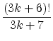

The math department has been having problems lately. Due to immense amount of unsolicited automated programs which were crawling across their pages, they decided to put Yet-Another-PublicTuring-Test-to-Tell-Computers-and-Humans-Apart on their webpages. In short, to get access to their scientific papers, one have to prove yourself eligible and worthy, i.e. solve a mathematic riddle.
However, the test turned out difficult for some math PhD students and even for some professors. Therefore, the math department wants to write a helper program which solves this task (it is not irrational, as they are going to make money on selling the program).
The task that is presented to anyone visiting the start page of the math department is as follows: given a natural n
, compute
Sn = -


![$\displaystyle \left.\vphantom{ \frac{(3k+6)!}{3k+7}}\right]$](4382img6.png)
where [x]
denotes the largest integer not greater than x
.
The first line contains the number of queries t
(t 106)
. Each query consist of one natural number n
(1n106)
.
106)
. Each query consist of one natural number n
(1n106)
.
For each n
given in the input output the value of Sn
.
13
1
2
3
4
5
6
7
8
9
10
100
1000
10000
0
1
1
2
2
2
2
3
3
4
28
207
1609